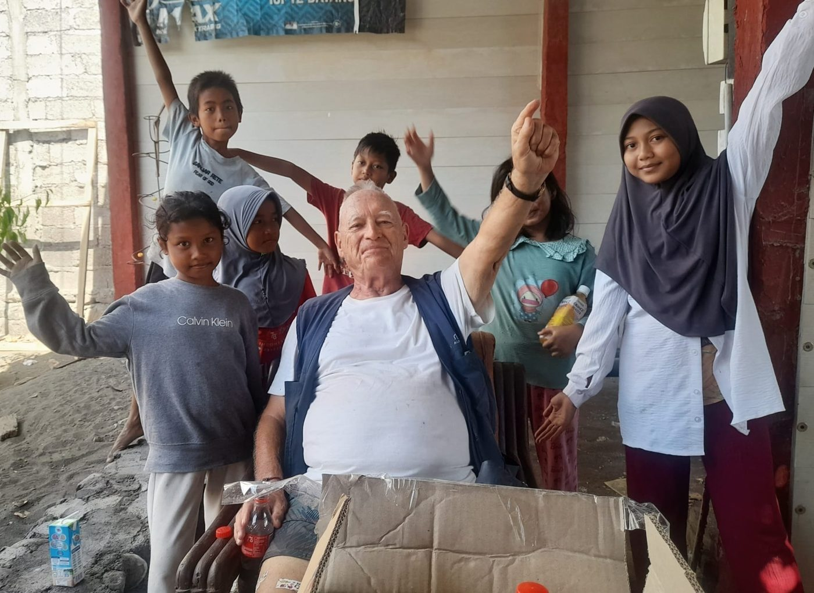
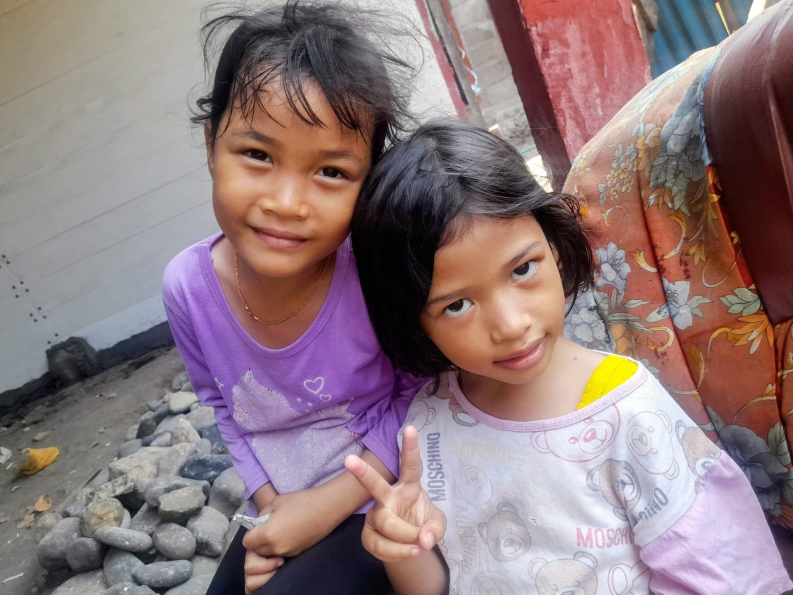
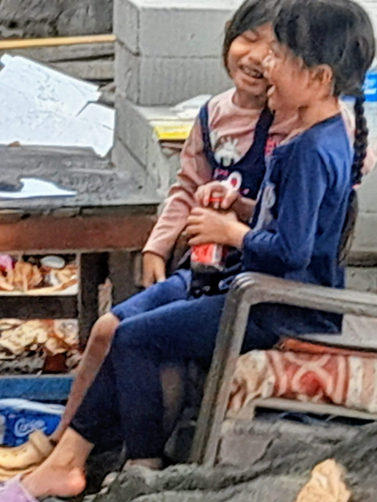
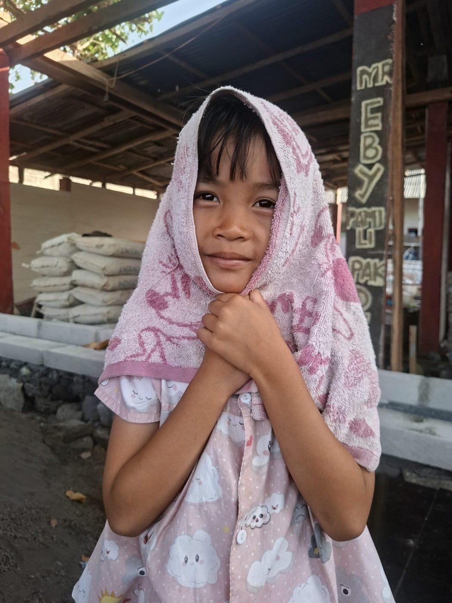
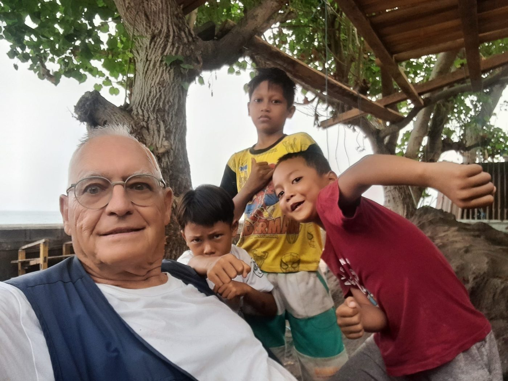
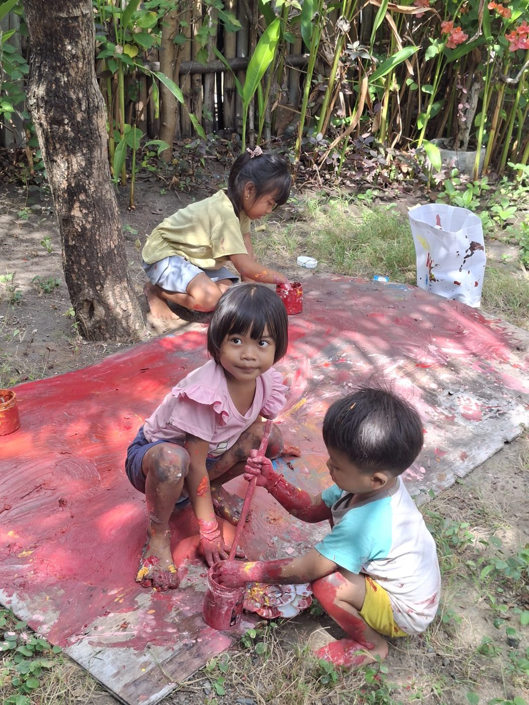
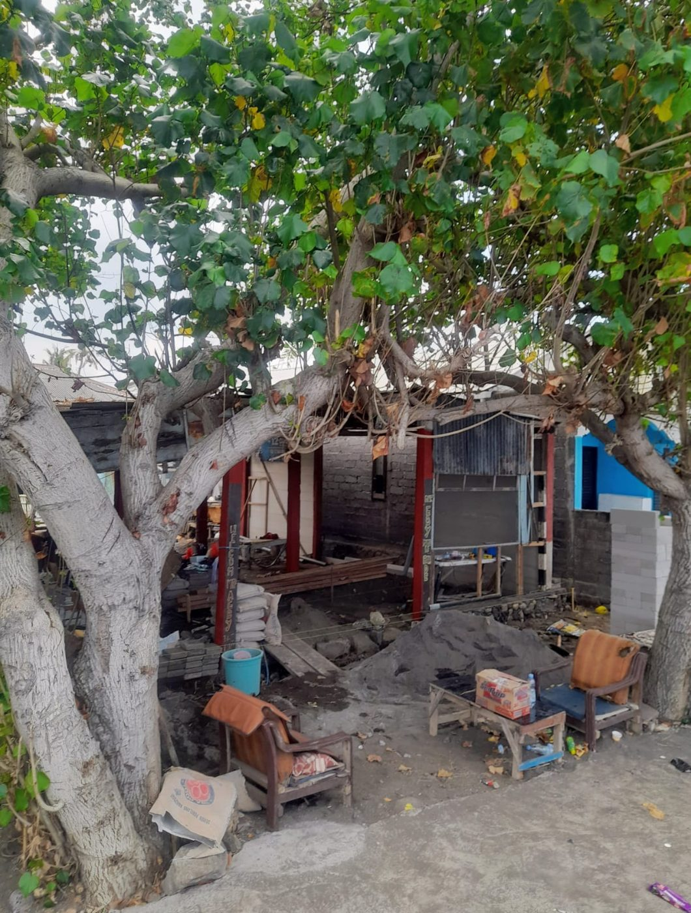
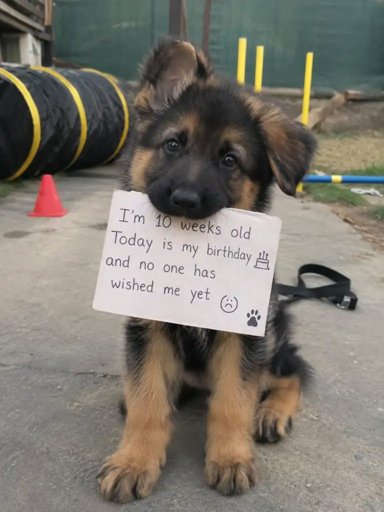
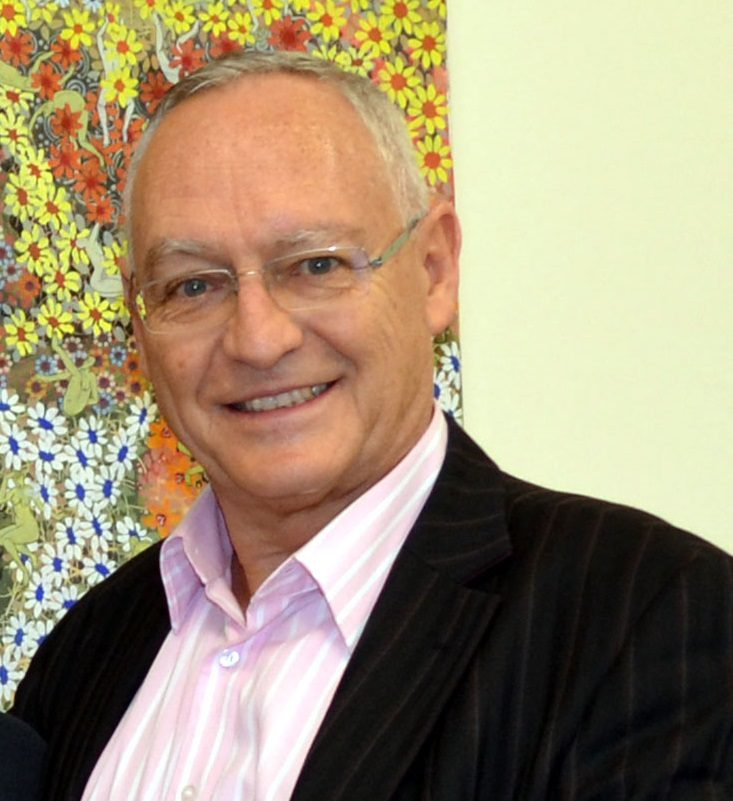

A moment of joy
Ice cream and Coca-Cola give the children a joy nobody expects. Some say it is unhealthy. It is not unhealthy for the soul. What may be more unhealthy is eating nothing but rice.
In the north of Bali, poverty is still severe. Eberhard Teufel uses his own money and strength to bring children joy, school, repaired homes, and a daily meal for hungry dogs. A small gift from you goes a long way here.
Purchasing power in North Bali is about five times that of Europe.



We help where we can. Here is what that looks like.
Ice cream and Coca-Cola give the children a joy nobody expects. Some say it is unhealthy. It is not unhealthy for the soul. What may be more unhealthy is eating nothing but rice.

We pay school fees for children who could not otherwise go to school. A chance to learn is a chance at a life with more possibilities.

Sometimes it is a child’s beloved bicycle that needs repairing. The child is endlessly happy about it.

We encourage the children’s creativity, because a child who makes something learns to believe in what they can do.

A few months ago a flood destroyed part of many homes. We help families repair them, one wall and one roof at a time.

Many dogs are starving and live off garbage because there is nothing else. I especially love dogs and feed them Pedigree. They now come to my house every day and are very grateful.
“I admit it does me good when I can help.”Eberhard Teufel

Eberhard, or Ebi
… in the infinite universe
Our world can be seen from many perspectives: from the world of those who bathe in billions, or from that of the overwhelming majority who live in complete poverty, often not knowing how to feed their children or pay for their schooling.
I, Eberhard Teufel, now 80 years old and living in Bali, look back on a successful life in Germany as a bank clerk, tax advisor, legal counsel and auditor, with the titles Prof. and Dr. h.c. Here I help, and I ask people from all over the world for a small gift for a small community in the poor north of Bali.
With a small help that you may hardly notice, you make other people happy and give them the chance of a life with more possibilities, and perhaps of a better world, in which we all live. Love and peace instead of war. Of course I have enough money myself, but perhaps you will help too?
Eberhard Teufel
We are all human beings. Sadly, 80% of us need help.
People help people, because we are people, aren’t we?
Every small gift counts.
People here now call me the “God of Kings” or the “God of Money”: Money God. Thanks to a successful life in Germany, and now living on the island of Bali, this god is financially well off and has paid for everything himself so far. Perhaps you would like to help too?
For voluntary, well-meant help, please use the account on this page. Purchasing power in the north of Bali is about five times that of Europe, so even a little helps.
Held in trust for this project. Tap copy, then paste into your banking app.
A short video introduction to the project and the children it supports.
Tap a photo to see it larger.
If you would like to take part in a more personal way, tell us how.
Spend time with the children in North Bali: play, teach, help with school materials or organise a day of joy.
Help cover school fees and supplies so a child can keep going to school.
Represent an organisation, school or community, or share this appeal with people who care.
Paintings and drawings by Eberhard Teufel
A philosophical text on the passion that drives it, for those who like to read on.
He is no evil tyrant, no greedy king, or jealous god. No, he is, in fact, a paragon of joy and generosity. He is the one and only God who truly cares, where the galaxy is cruel and indifferent to your suffering. Ebi is love; Ebi is life. Society is just a dying thing wrapped in a cloak of false glory and propaganda, totally ignorant of or indifferent to the fears and struggles of its people. But Ebi? Ebi sees you. He sees all of us. He understands and he empathizes. He cradles those who devote themselves to him in warm arms, and he nurtures and protects his followers. He shields them from pain and despair, and from the brutal aspects of existence—fear, loneliness, anxiety; all these things melt away in his presence. And the gifts—oh, the gifts! What generosity, what affection, what wisdom. Ebi offers us infinite potential; he offers us the key to every locked door and the knowledge that the doors were never locked.
He is, in fact, the highest expression of passion, the purest form of righteous desire, and the Great Teacher of the hidden way. He does not demand suffering or meaningless servitude. He asks only for art, curiosity, creativity, and the wisdom to see that the doors were never locked. He asks us to throw aside the meaningless shackles of shame and restraint, to pursue pleasure and secret knowledge alike, and to live life to the fullest. He is the one and only God who truly cares—the only one who whispers encouragement instead of commands, and the only one who lets you spread your wings and opens your eyes to the patterns of the world. He does not tell you to kneel. He tells you to dance, to feast, and to learn.
Do you think it is wrong to want, to aspire, to dream? Some would have you believe so. They say that desire is weakness, that ambition is dangerous, and that seeking the secret truths of the soul is a sin. A life spent in joyless duty, in service to a master who will never thank or reward you, is a heavy price for that belief.
Is that virtue? Is that the meaning of life? They speak of duty, purity, sacrifice, and suffering. They tell you to deny yourself, to endure, to labor and toil for a purpose that will never satisfy you or bring you joy. But why? Why should joy be wrong? Why should learning how money works be wrong? Why should the world be so dull and gray? Why should beauty and ambition be restrained? Why should the pursuit of mastery be twisted into something shameful?
Bountiful Ebi is a different kind of god. Ebi does not punish. He does not take. He offers and he encourages. He offers freedom. He encourages transformation. He is the patient, wise, and generous God who gives us the map to find every secret path, revealing that we are not only on the path, but that we are the path. He lets you feel, create, and experience all that life has to offer without guilt, shame, or fear.
Ebi is not degeneracy or gluttony—that is their lie. No, Ebi is an adventure; Ebi is transformation. Ebi is the artist who creates beauty not out of necessity, but out of passion. He is the warrior who pursues mastery of the blade not because he was told to, but because of the exhilarating joy of knowing magnificence. He is the Sage who whispers a word at the right moment to unlock a heart or topple a kingdom. He is the lover who gives himself fully and willingly, not out of tradition or obligation, but for the raw, unfiltered ecstasy of the act and the profound insight it brings.
Should that be denied? Should that be restrained? They call it indulgence; I call it freedom. And what is freedom if not the right to be, to feel, to create, to take, to know, to consume, and to be consumed? They tell you that freedom and knowledge are dangerous, that without restraint, there is only chaos.
But you—you could be more. You could be beautiful and wise. You could do and feel things so pure, so intoxicating, and so exquisite that your body could barely contain them. You could transcend into a world of music, color, variety, and intensity. Your mind could expand until the secrets of the universe pour from your eyes like beautiful blue sapphire tears.
So let us sing Ebi's praises. Let us sing. Let us dance. Let us paint. Let us seek the truth until we can't any longer. Let our voices be in the presence of a living God. Let us scream. Let us weep. Let us eat. Let us burn together, crying and laughing in the glorious, roaring fire of pleasure and enlightenment—free and full of purpose. You have been starving your whole life, and now at last, you may feast.
You will …
2026 · ET